Mengungkap Rasa, Budaya, dan Keindahan Pulau Sapi Kerap.
Jelajah Pulau Madura, Website ini berisi berbagai informasi tentang ciri khas Pulau dengan ikonik sapi kerapannya. Mulai dari makanan khas, wisata populer, dan budaya lokal.
Jelajah Pulau Madura merupakan platform edukasi dan eksplorasi yang dibuat untuk memperkenalkan kekayaan Pulau Madura kepada masyarakat luas. Mulai dari makanan khas yang melegenda, tempat wisata yang memukau, hingga kebudayaan tradisional yang sarat nilai-nilai lokal. Semua disajikan dengan tampilan visual menarik dan informasi yang mudah dipahami.


 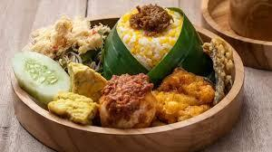
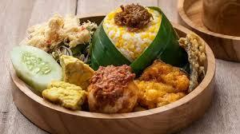


 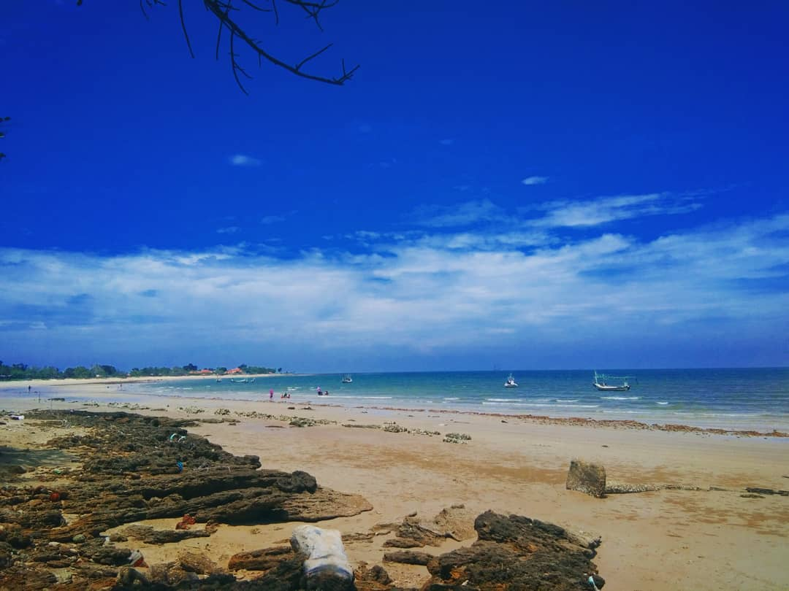
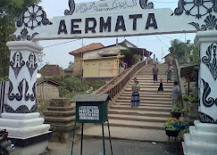
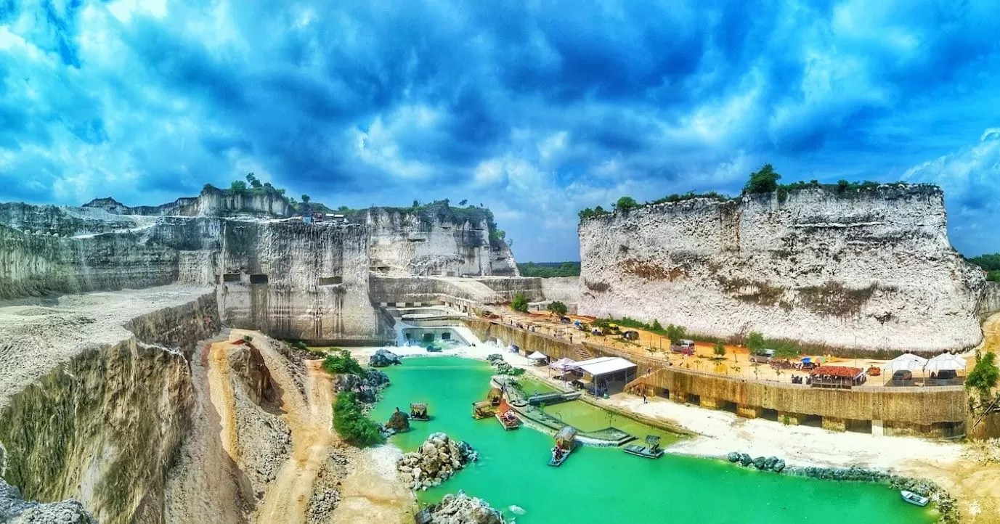
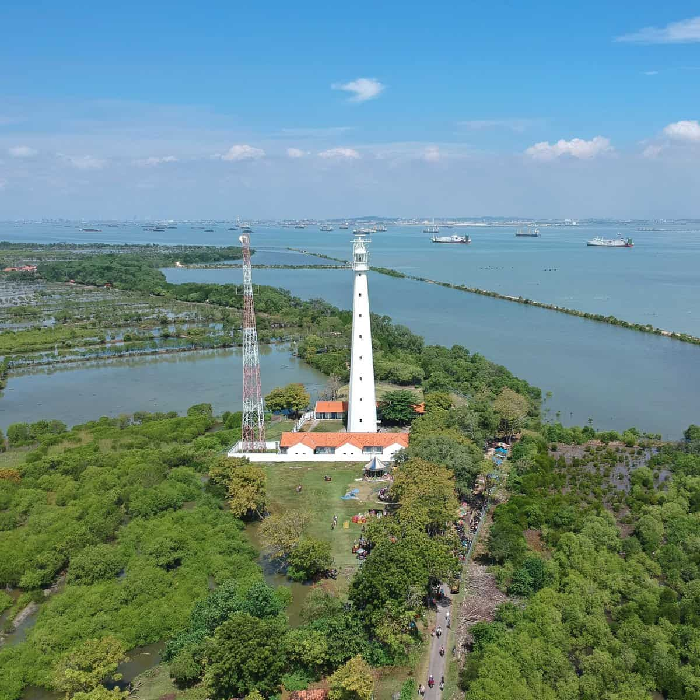
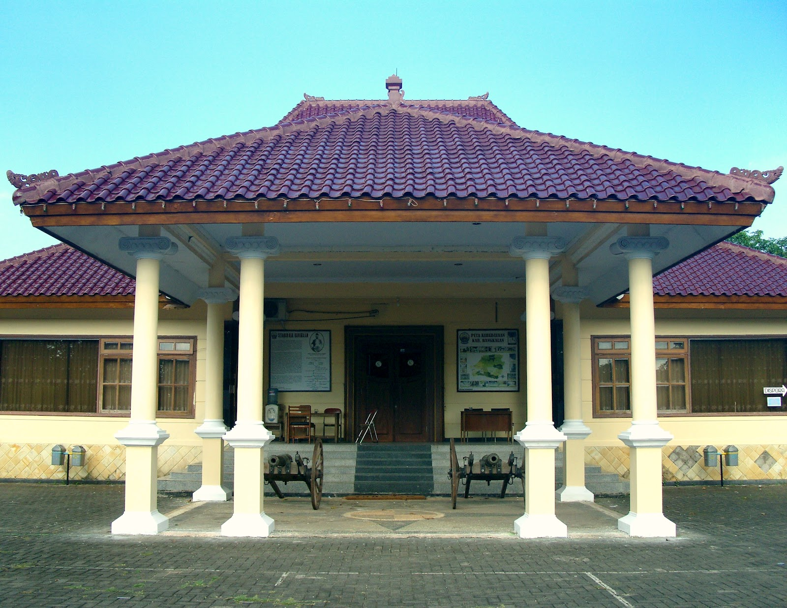
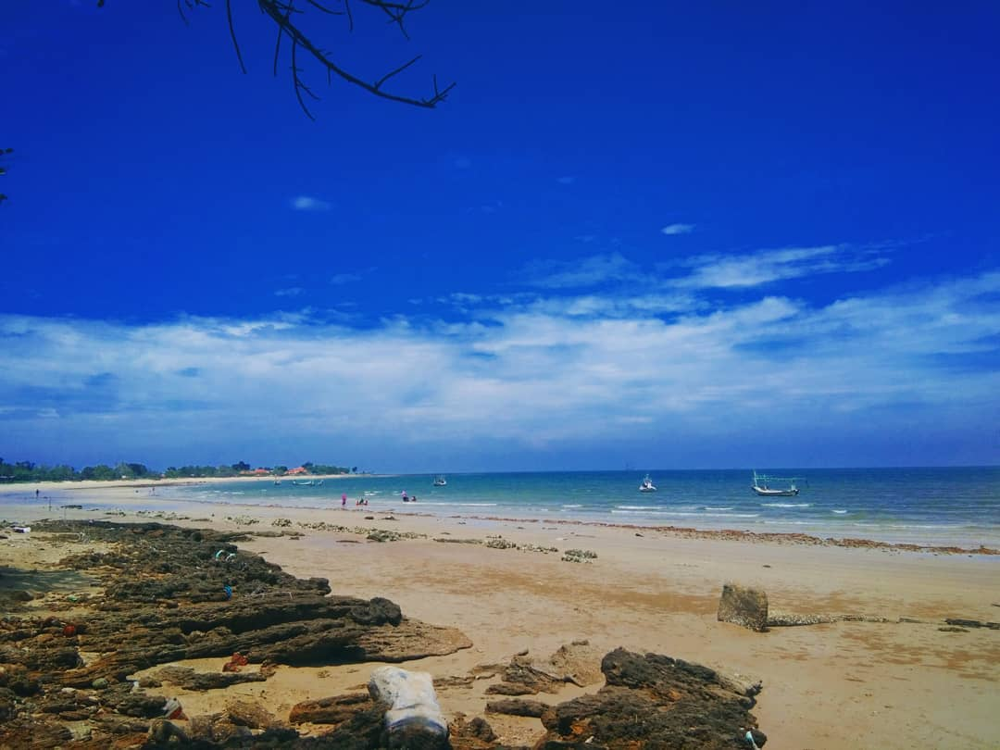
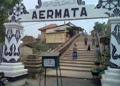
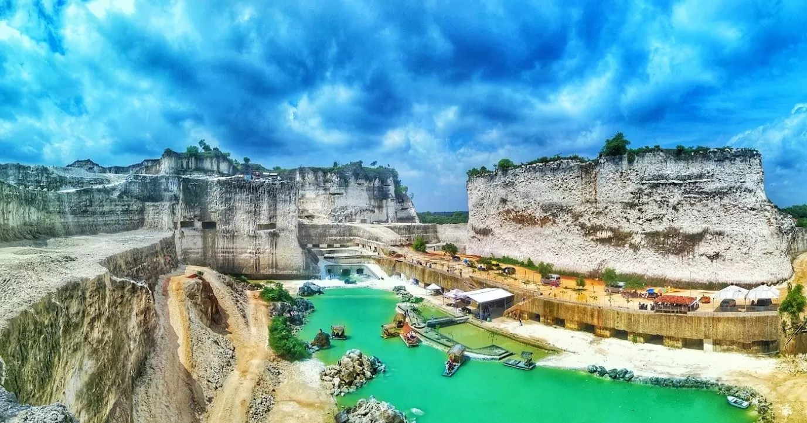
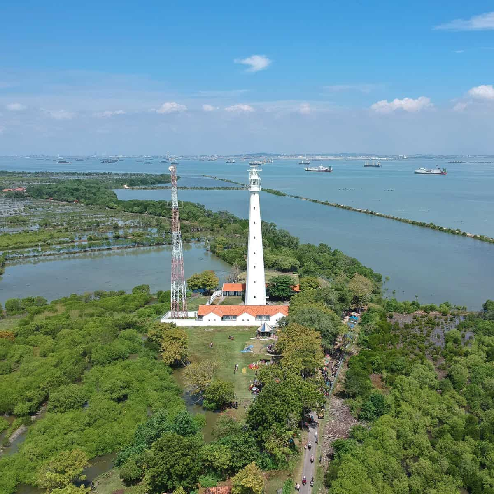
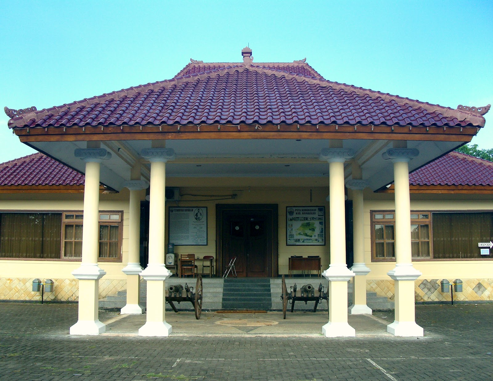
 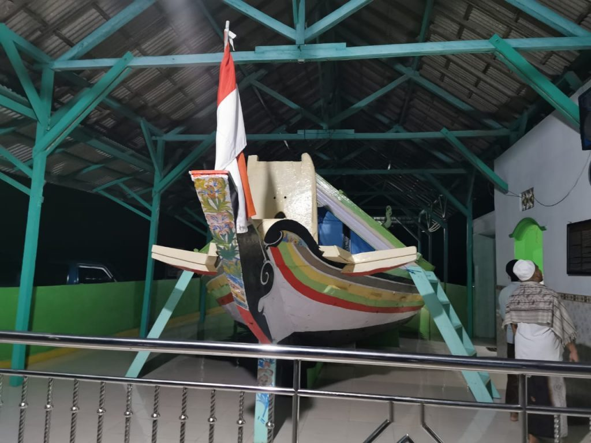
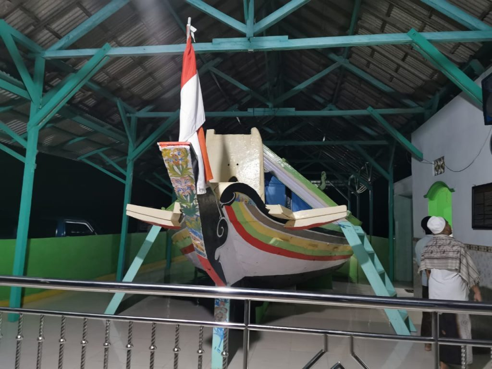
 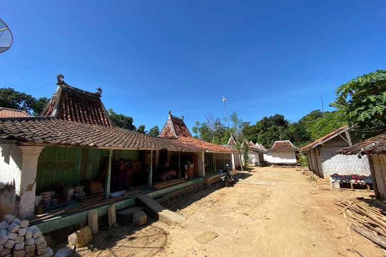
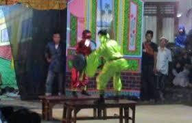
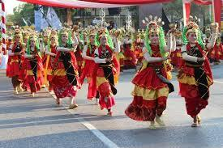
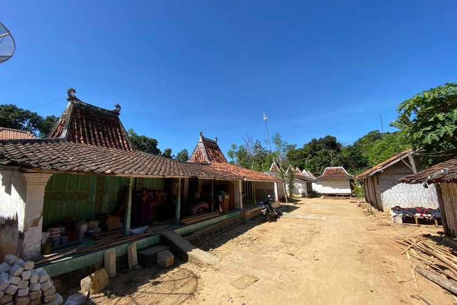
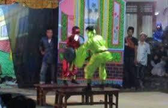
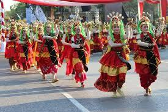